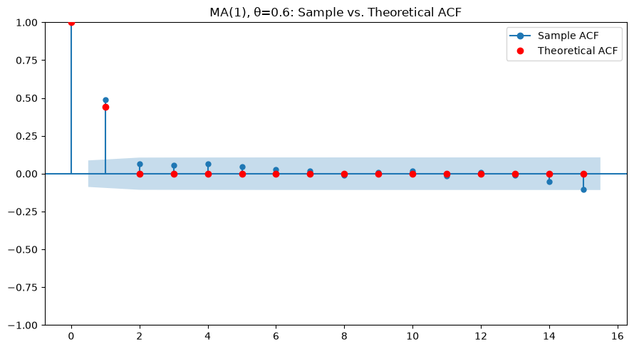
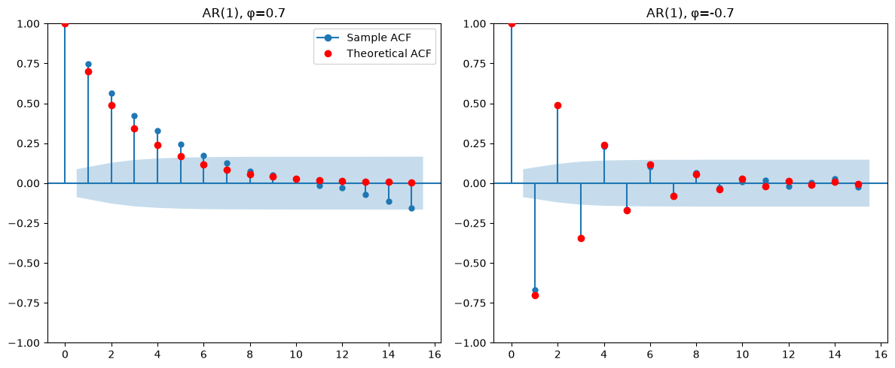
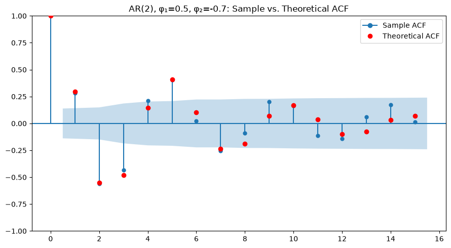
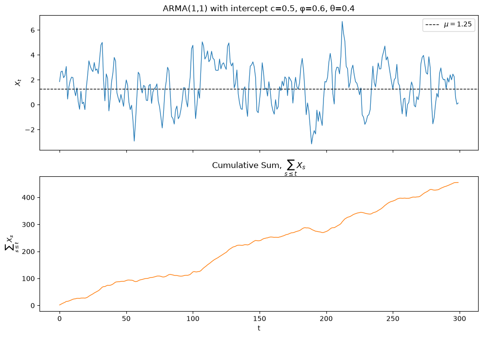

A sharp cutoff in the sample ACF is the signature of an MA model.
Note: |\rho_X(1)| = |\theta|/(1 + \theta^2) \leq 1/2. The maximum one-lag correlation an MA(1) can produce is 1/2, achieved at |\theta| = 1.
MA(1): Visualizing the ACF
Simulate X_t = Z_t + \theta Z_{t-1} and compare the sample ACF to the theoretical ACF derived above.
from matplotlib.lines import Line2Dfrom statsmodels.graphics.tsaplots import plot_acf# reuse the same simulated X, theta, n from the previous slidelags =15rho_theory = np.zeros(lags +1)rho_theory[0] =1rho_theory[1] = theta / (1+ theta**2)fig, ax = plt.subplots(figsize=(9, 5))plot_acf(X, lags=lags, ax=ax, title=f"MA(1), θ={theta}: Sample vs. Theoretical ACF")ax.scatter(range(lags +1), rho_theory, color="red", zorder=5, label="Theoretical ACF")sample_handle = Line2D([0], [0], color="C0", marker="o", label="Sample ACF")theory_handle = Line2D([0], [0], color="red", marker="o", linestyle="", label="Theoretical ACF")ax.legend(handles=[sample_handle, theory_handle])plt.tight_layout()plt.show()
The sample ACF (blue bars, with confidence bands) closely tracks the theoretical values (red dots) — a sharp drop to (near) zero after lag 1.
MA(1): Visualizing the ACF

Invertibility
An MA(1) is invertible if |\theta| < 1.
Invertibility ensures the model is uniquely identifiable from its ACVF. For any non-invertible MA model, there is an equivalent invertible one with the same ACVF but parameter 1/\theta instead of \theta.
In practice, estimation software always returns the invertible solution.
The ACF of an MA(q) is exactly zero beyond lag q. This is the diagnostic used to identify q from the sample ACF.
Invertibility of MA(q)
There is another (more complicated) way to ensure invertibility of an MA(q) model, but writing the criterion requires discussing complex-valued polynomials. If you’re interested in learning about those, see the supplementary lecture.
It’s easy to miss the forest through the trees on this: it’s just a restriction of the parameter space so we don’t get two different models that yield that same acf plot.
Nobody uses non-invertible MA models. Software will (should) always restrict its attention to this situation. It’s just good to know that there is a restriction of the parameter space happening, though.
This is an MA(\infty) representation with absolutely summable coefficients \sum |\phi^j| = 1/(1 - |\phi|) < \infty. When an AR process has such a representation, it is called causal.
Iterating: \gamma_X(h) = \phi^h \gamma_X(0). So the ACF is:
\rho_X(h) = \phi^{|h|}
Key feature: the ACF decays geometrically, never cutting off.
AR(1): Visualizing the ACF
Compare the sample ACF to the theoretical \rho_X(h) = \phi^{|h|} for \phi = 0.7 and \phi = -0.7.
from matplotlib.lines import Line2Dfrom statsmodels.graphics.tsaplots import plot_acf# reuse the same simulated series, phis, n from the AR(1) time series slidelags =15fig, axes = plt.subplots(1, 2, figsize=(12, 5))for ax, phi inzip(axes, phis): rho_theory = phi ** np.arange(lags +1) plot_acf(series[phi], lags=lags, ax=ax, title=f"AR(1), φ={phi}") ax.scatter(range(lags +1), rho_theory, color="red", zorder=5)sample_handle = Line2D([0], [0], color="C0", marker="o", label="Sample ACF")theory_handle = Line2D([0], [0], color="red", marker="o", linestyle="", label="Theoretical ACF")axes[0].legend(handles=[sample_handle, theory_handle])plt.tight_layout()plt.show()
The sample ACF tracks the theoretical geometric decay in both cases — note the alternating sign when \phi < 0, versus the smooth decay when \phi > 0. Unlike the MA case, there is no sharp cutoff.

AR(p): General Case
When we have an AR(p)
X_t = \phi_1 X_{t-1} + \phi_2 X_{t-2} + \cdots + \phi_p X_{t-p} + Z_t
there is a way to restrict our attention to causal models. However, writing it down requires discussion of complex-valued polynomials. If you’re interested in learning about those, see the supplementary lecture.
Most of the time people work with causal models, just because it makes sense that we don’t allow ourselves to condition on the future.
AR(2): Simulated Time Series
With complex-conjugate roots, an AR(2) can produce a pseudo-periodic, oscillating-but-decaying series.
from matplotlib.lines import Line2Dfrom statsmodels.graphics.tsaplots import plot_acf# reuse the same simulated X, phi1, phi2, n from the AR(2) time series slidelags =15rho_theory = np.zeros(lags +1)rho_theory[0] =1rho_theory[1] = phi1 / (1- phi2)for h inrange(2, lags +1): rho_theory[h] = phi1 * rho_theory[h -1] + phi2 * rho_theory[h -2]fig, ax = plt.subplots(figsize=(9, 5))plot_acf(X, lags=lags, ax=ax, title=f"AR(2), φ₁={phi1}, φ₂={phi2}: Sample vs. Theoretical ACF")ax.scatter(range(lags +1), rho_theory, color="red", zorder=5)sample_handle = Line2D([0], [0], color="C0", marker="o", label="Sample ACF")theory_handle = Line2D([0], [0], color="red", marker="o", linestyle="", label="Theoretical ACF")ax.legend(handles=[sample_handle, theory_handle])plt.tight_layout()plt.show()
The pseudo-periodic time series shows up in the ACF as a damped oscillation rather than a sharp cutoff — the signature of complex-conjugate roots. If you’re interested in learning about complex polynomials, see the supplementary lecture.
AR(2): Visualizing the ACF

The Partial Autocorrelation Function (PACF)
The PACF at lag h measures the correlation between X_t and X_{t-h}after removing the linear effect of the intermediate observations X_{t-1}, \ldots, X_{t-h+1}.
Formally, it’s the coefficient on X_{t-h} in the best linear predictor of X_t from X_{t-1}, \ldots, X_{t-h} (computable via the Durbin-Levinson recursion).
Key feature: for an AR(p), the PACF is exactly zero beyond lag p.
Intuition: once you regress X_t on its own p lags, you’ve captured everything the model says about the past — an additional lag adds nothing.
This is the AR analogue of the ACF cutoff for MA(q) models.
PACF of the Simulated AR Models
Compare the sample PACF for AR(1), \phi = 0.7; AR(1), \phi = -0.7; and AR(2), \phi_1 = 0.5, \phi_2 = -0.7.
from statsmodels.graphics.tsaplots import plot_pacf# reuse series (AR(1) paths) and X (the AR(2) path) simulated earlierlags =15fig, axes = plt.subplots(1, 3, figsize=(15, 4.5))plot_pacf(series[0.7], lags=lags, ax=axes[0], title="AR(1), φ=0.7")plot_pacf(series[-0.7], lags=lags, ax=axes[1], title="AR(1), φ=-0.7")plot_pacf(X, lags=lags, ax=axes[2], title=f"AR(2), φ₁={phi1}, φ₂={phi2}")plt.tight_layout()plt.show()
Each PACF cuts off right after the true model order — lag 1 for the AR(1)s, lag 2 for the AR(2) — while the ACFs (previous slides) tail off geometrically instead.
There are some technical restrictions on the parameter space. For more details see the supplementary lecture on complex polynomials.
Why ARMA?
Pure AR or MA models can require many parameters to capture complicated ACF shapes.
An ARMA(1,1) may approximate data that would require AR(10) or MA(20) to describe. This is the parsimony principle: fewer parameters generalize better.
If you don’t have a compliated ACF/PACF, don’t worry about it. If you do, you’ll most likely use ARMA instead of a pure MA, or pure AR.
ARIMA(p, d, q)
ARMA requires \{X_t\} to already be stationary. Many series (e.g., (log-)price levels) aren’t. But their differences often are.
The ARIMA(p, d, q) model applies ARMA(p, q) to the series after differencing d times. Let W_t denote X_t differenced d times (e.g., W_t = X_t - X_{t-1} when d=1). Then \{W_t\} follows an ARMA(p,q):
In practice:d=0 recovers plain ARMA; d=1 models the differenced series (e.g., returns instead of prices); d\ge2 is rare.
We’ve been modeling AUD/JPY returns directly, which are already stationary — so d=0 and ARMA suffices. ARIMA becomes necessary if you instead want to model the non-stationary price/spot level.
Part 4: Adding Deterministic Trend
Why Extend ARMA?
Every model so far has assumed E[X_t] = 0 exactly, with no trend and no explanatory variables.
Real series have nonzero means, trends, and — often — other economic variables that help explain them. This part shows how those pieces attach to the same ARMA machinery instead of requiring a new theory.
The takeaway: ARMA is a building block, not a finished forecasting model on its own.
Intercept vs. Mean: An Easy Mix-Up
Add a constant c directly to the right-hand side of the ARMA equation — this is the intercept:
c and \mu are the same number only when p = 0 (pure MA, or white noise). Whenever there’s an AR component, the raw intercept and the long-run mean differ — and software isn’t always consistent about which one it reports or lets you fix, which is a common source of confusion when reading output.
The Same Constant After Differencing
Now suppose d \geq 1 and we add a constant c to the equation for the differenced series W_t = X_t - X_{t-1}:
By the same argument as above, E[W_t] = c / (1 - \sum \phi_i) — a nonzero constant. Since X_t = X_0 + \sum_{s \le t} W_s, a nonzero mean for W_t makes X_t climb (or fall) by roughly that amount every period — a deterministic linear trend in the level, not just a fixed mean to revert to.
This is why it matters which equation the constant sits in: a constant in the d=0 (ARMA) equation gives you a forecast that reverts to a flat mean; the same constant in a d\geq1 (ARIMA) equation gives you a forecast that keeps sloping upward (or downward) indefinitely.
Seeing It: ARMA(1,1) with an Intercept vs. Its Cumulative Sum
Simulate X_t = c + \phi X_{t-1} + Z_t + \theta Z_{t-1}, then plot X_t itself next to \sum_{s \leq t} X_s — the cumulative sum stands in for what happens once you integrate a d\geq1 model back up to the level series:
The top panel is exactly what an ARMA intercept gives you: fluctuation around a fixed mean \mu, never trending away. The bottom panel — built by summing that same series — climbs roughly linearly, with slope \approx \mu. That’s the mechanism behind the previous slide: once you’re working with the level series (undoing a difference), a nonzero mean in the differenced series shows up as a deterministic trend in the level.
Seeing It: ARMA(1,1) with an Intercept vs. Its Cumulative Sum

Bringing in Predictors: Two Different Models
Suppose you also have predictor variables Z_{1,t}, \ldots, Z_{k,t} (e.g., interest rate differentials, momentum signals) you’d like to use alongside ARMA structure. There are two genuinely different ways to combine them.
Regression with ARMA errors: the predictors explain the mean of Y_t; ARMA only cleans up whatever serial correlation is left in the noise:
In regression with ARMA errors, \beta_j keeps its usual regression interpretation: holding the other predictors fixed, a one-unit change in Z_{j,t} shifts Y_t’s mean by \beta_j, full stop. The ARMA part is confined to the error term and doesn’t touch that interpretation.
In ARMAX, Y_{t-1}, \ldots, Y_{t-p} are themselves regressors — so a change in Z_{j,t} doesn’t just move Y_t, it also propagates into Y_{t+1}, Y_{t+2}, \ldots through the autoregressive feedback. \beta_j is no longer a clean “holding everything else fixed” effect; the true effect of a change in Z_j is a dynamic path, not a single number. (See Rob Hyndman’s write-up on this exact point: robjhyndman.com/hyndsight/arimax.)
Default to regression with ARMA errors unless you have a specific reason to want the feedback dynamics of ARMAX — it’s usually what people actually mean when they say they want to “add ARMA to a regression.”
ARMA Is a Building Block, Not an Endpoint
Trend, exogenous predictors, and (next module) time-varying variance all combine with ARMA rather than replace it. The theory we’ve built — stationarity, ACF/PACF identification, invertibility — keeps paying off as we bolt on each extension.
Part 5: Identification and Estimation
ACF and PACF: The Identification Table
The partial autocorrelation function (PACF) at lag h measures the correlation between X_t and X_{t-h} after removing the linear effect of all intermediate lags.
Model
ACF
PACF
MA(q)
Cuts off after lag q
Tails off (geometric)
AR(p)
Tails off (geometric)
Cuts off after lag p
ARMA(p,q)
Tails off
Tails off
White noise
Near zero for h > 0
Near zero for h > 0
Use this table to make an initial guess for p and q, then use information criteria to refine.